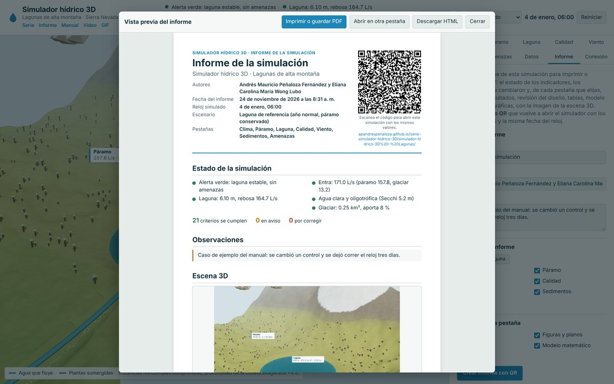
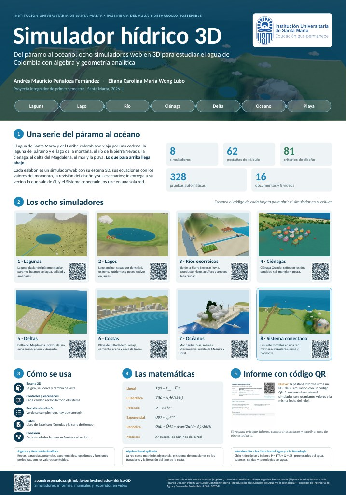

Laguna de alta montaña
Laguna glaciar del páramo: balance de agua, glaciar, regulación del páramo, calidad, sedimentos y amenazas.
Abrir el simulador →Serie de simuladores web en 3D para estudiar el agua de Colombia con álgebra y geometría analítica, del páramo al océano. Cada simulador es autónomo y entrega a sus vecinos lo que sale de él; el sistema conectado los une a todos.
Laguna glaciar del páramo: balance de agua, glaciar, regulación del páramo, calidad, sedimentos y amenazas.
Abrir el simulador →Lago profundo de alta montaña: estratificación, viento, oxígeno, nutrientes (Vollenweider y Carlson), nivel y cultivo en jaulas de trucha o de peces nativos (capitán de la sabana y guapucha).
Abrir el simulador →El proyecto de referencia: lluvia, río, represa, captación, bombeo, tuberías, red, riego, huella, acuífero y arroyo.
Abrir el simulador →Laguna costera: caños con agua en los dos sentidos (el río la llena en la creciente y ella le devuelve agua en el estiaje), alisios, marea, salinidad, manglar, calidad del agua y sedimentos.
Abrir el simulador →Desembocadura: canales, cuña salina, pluma, avance del delta, oleaje y dragado del canal de acceso.
Abrir el simulador →Playa de bahía: oleaje y rompiente, nivel del mar y remonte, perfil y regla de Bruun, arena y calidad del agua.
Abrir el simulador →Mar abierto: olas, mareas, Ekman y afloramiento, bosque de niebla de la Serranía de Macuira, temperatura y coral, pluma, nivel del mar y acidificación.
Abrir el simulador →Une los siete modelos: composición de funciones, matriz de la red, lazo de la costa, trazadores, clima y horizonte.
Abrir el simulador →
Cada simulador tiene la pestaña Informe. Arma un informe de la simulación para imprimir o guardar en PDF y le pone un código QR que abre el simulador publicado con los mismos valores, la misma fecha del reloj y la misma pestaña.
Cada simulador tiene dos documentos. El informe técnico explica el problema, el modelo matemático con sus ecuaciones, los supuestos, el escenario base y las referencias. El manual de uso enseña paso a paso a manejar el simulador: la escena 3D, cada pestaña con sus controles y resultados, los escenarios guiados, la descarga a Excel y la conexión con los demás simuladores. Los PDF se abren en el navegador y los archivos de Word se descargan para editarlos.
| Simulador | Informe técnico | Manual de uso | Recorrido |
|---|---|---|---|
| 1 · Lagunas | PDF 1.4 MB · Word 0.8 MB | PDF 6.5 MB · Word 7.5 MB | Video 6.6 MB · GIF 18.2 MB |
| 2 · Lagos | PDF 1.5 MB · Word 0.9 MB | PDF 5.9 MB · Word 6.7 MB | Video 4.9 MB · GIF 11.7 MB |
| 3 · Ríos exorreicos | PDF 1.7 MB · Word 6.8 MB | PDF 17.7 MB | Video 23.6 MB · GIF 23.9 MB |
| 4 · Ciénagas | PDF 1.7 MB · Word 1.1 MB | PDF 6.5 MB · Word 7.7 MB | Video 6.4 MB · GIF 13.9 MB |
| 5 · Deltas | PDF 1.5 MB · Word 0.9 MB | PDF 5.8 MB · Word 6.8 MB | Video 6.7 MB · GIF 18.5 MB |
| 6 · Costas | PDF 1.5 MB · Word 0.9 MB | PDF 5.8 MB · Word 6.9 MB | Video 6.3 MB · GIF 22.9 MB |
| 7 · Océanos | PDF 1.7 MB · Word 1.0 MB | PDF 5.9 MB · Word 6.6 MB | Video 8.3 MB · GIF 20.8 MB |
| 8 · Sistema conectado | PDF 1.5 MB · Word 0.9 MB | PDF 6.9 MB · Word 8.2 MB | Video 7.7 MB · GIF 19.6 MB |
Un recorrido de cerca de un minuto por cada simulador: girar la escena, cambiar de vista, mover un control, probar un escenario, leer la revisión del diseño, armar el informe con código QR y guardar los datos. Los mismos recorridos están en GIF para ponerlos en diapositivas o documentos.
La serie se revisó frente a la carpeta del curso: la guía de repaso de la Unidad 1, las guías de trabajo académico, el glosario, las presentaciones y el taller integrador del tercer seguimiento. La tabla dice en qué simulador y en qué pestaña se ve cada tema (U: unidad de la guía de repaso; B: bloque del taller integrador). Cada informe técnico trae la sección «Relación con el curso» con el detalle, las Ciencias del Agua que reúne el simulador y sus cuatro dimensiones.
| Tema del curso | Dónde se ve en la serie |
|---|---|
| U1.1El agua como sistema natural y sus cuatro dimensiones (científica, ambiental, social y tecnológica) |
|
| U1.2Las Ciencias del Agua y su objeto de estudio |
|
| U1.3Propiedades del agua: polaridad, densidad anómala, capacidad calorífica, calor latente, tensión superficial y solubilidad de gases | |
| U1.4Distribución del agua en la Tierra (océanos, glaciares, agua subterránea y superficial) | |
| U1.5Ciclo hidrológico, tiempos de residencia y balance P = ETR + Q + ΔS |
|
| B2Balance hídrico desde cuatro perspectivas: embalse, distrito de riego, cuenca alta y acuífero |
|
| B3Cuenca, morfometría, red de drenaje, hidrometría y régimen de caudales (flujo base, ríos ganadores y perdedores, curva de duración) |
|
| B4Condiciones sanitarias, parámetros de calidad y presiones territoriales |
|
| B5Tecnologías del agua: acueducto (captación, desarenador, aducción, PTAP, almacenamiento y red), saneamiento y cálculos de diseño |
|
| B6Caso situado: cuenca del río Gaira y acuífero costero de Santa Marta (asignación, caudal ecológico, sequía e intrusión salina) |

Póster vertical de 70 × 100 cm para imprimir en litografía: la serie del páramo al océano, los ocho simuladores con su código QR, la pestaña Informe, la relación con los cursos y los créditos.